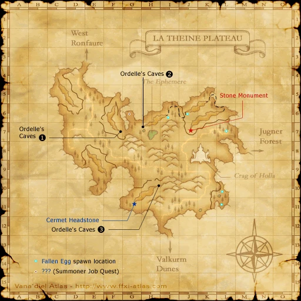
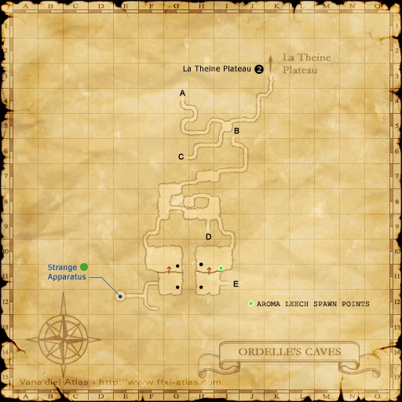
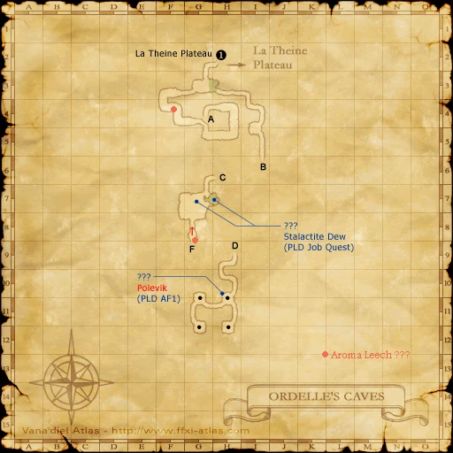
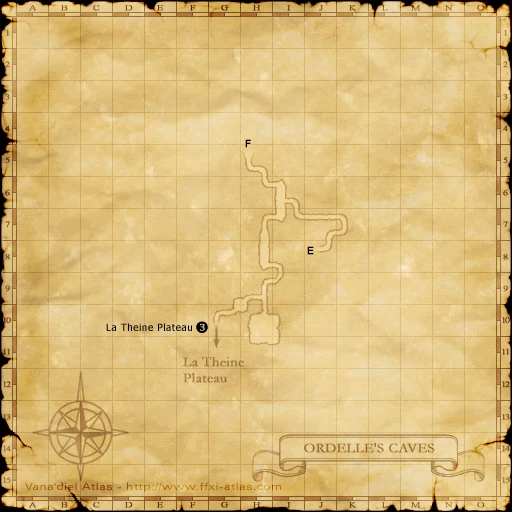

Before you begin
Be allied with San d'Oria, have Rank 2, and finish the preceding required story steps. Raise Rank Points if the mission is not offered.
Accept the mission before following its route. If the guard does not offer it, finish your current mission and any closing scenes, then raise Rank Points with crystals at a Conquest guard if required.
Items and key items
| Item — open for its source | Type | Where it comes from |
|---|---|---|
| Bronze Sword | Inventory item | For The Rescue Drill, speak to Ruillont first, then visit Deaufrain, Equesobillot and Galaihaurat outside the cave. Your mission randomly assigns one of them to give you the sword. Trade it to Ruillont; buying it does not replace the conversations. |
| Rescue Training Certificate | Key item | After returning the Bronze Sword to Ruillont, speak to Vicorpasse at La Theine Plateau (F-6). |
Walkthrough
Find the missing trainee
- Accept The Rescue Drill. Go to Galaihaurat in La Theine Plateau (E-6), then descend the ravine toward the Ordelle’s Caves entrance at (F-6).
- Speak to Vicorpasse and the training party around the ravine. Enter Ordelle’s Caves and speak to Ruillont beside the pool at (G-3).
Recover his sword
- Return outside and speak to Deaufrain, Equesobillot and Galaihaurat. The mission chooses which of these three has the Bronze Sword for your run.
- After the correct conversation, receive the Bronze Sword. Return inside and trade it to Ruillont. Buying a sword alone does not replace the required mission conversations.
Finish the drill
- Speak to Vicorpasse outside for the Rescue Training Certificate. Return to a San d’Oria mission guard to complete the mission.
Completion and reward
Rank Points
Area maps
Open a zone below, then select a map to enlarge it. Match the named floors and grid coordinates in the steps; these are reference area maps, not a live position tracker.
La Theine Plateau



Ordelle's Caves









References
Native mission script used by the Zenith baseline · HorizonXI route and map reference
Written for Zenith from the reviewed mission steps. Battlefield conditions follow the server’s entry message; Horizon-exclusive wardrobe rewards are not part of these rewards.
Additional level-75 reference
|
Walkthrough
Note: You need to trade 12 or fewer crystals or repeat a previous mission once to advance your Rank Bar enough to obtain this mission.
- If you are a low-level character, for this mission, you may want Prism Powders and Silent Oils or some friends to help fight monsters on the way.
- Head to La Theine Plateau and walk down the road until you encounter Galaihaurat at (E-6). He will talk about some training mission.
- Now head east into the canyon. At (F-6) you will find Equesobillot, then Deaufrain as you walk down the embankment.
- Go down the lower level of the canyon; Poison Funguar aggro to sound. You will encounter other NPCs in the area. Talk to Vicorpasse, then Laurisse and Narvecaint near the zone to Ordelle's Caves. At (F-7) you will zone into Ordelle's Caves.
- Upon zoning, hug the left wall and you will find Ruillont hiding in a small pond next to a wall at (G-3). Speak to Ruillont, and he will demand his weapon.
- Now zone back into La Theine Plateau and talk to all NPCs in the canyon including Equesobillot and Galaihaurat, as a random one of these will give you a Bronze Sword.
- Return to Ruillont once the sword is obtained and trade it to him.
- Return to Vicorpasse to receive Key Item: Rescue Training Certificate.
- Return to a Mission NPC to complete the mission.
Game Description
- Mission Orders
- Participate in the Temple Knights' rescue drill out on La Theine Plateau.
Adapted from Eden Wiki: The Rescue Drill · Contributors and history · CC BY-SA 4.0. Revision 8798. Layout, links and optional background text adapted for Zenith.